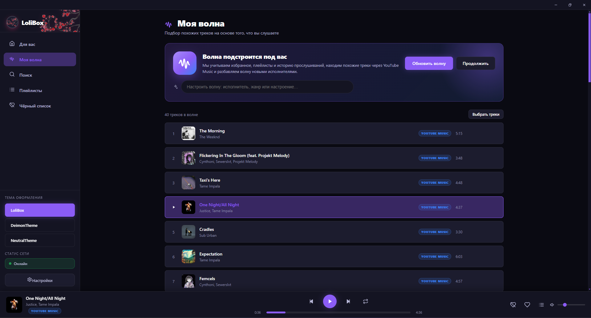

Умная «Волна»
Подбирает треки по истории, лайкам и плейлистам — и постепенно расширяет вкус новыми исполнителями.
LoliBox — лёгкий плеер для YouTube Music. Умная «Волна» собирает похожее по тому, что ты слушаешь, а аккуратный тёмный интерфейс не мешает главному — музыке.

Ничего лишнего: только музыка, удобный поиск и управление тем, что звучит.
Подбирает треки по истории, лайкам и плейлистам — и постепенно расширяет вкус новыми исполнителями.
Треки, исполнители и альбомы — с отсевом мусора, каверов и лишних дублей.
Собирай подборки под настроение и держи их под рукой — всё в одном окне.
Скрывай нежелательные треки и исполнителей, чтобы они не возвращались в рекомендации.
LoliBox, DeimonTheme и NeutralTheme — на любой вкус и освещение в комнате.
Очередь, громкость, горячие клавиши и работа из системного трея.
Настоящие скриншоты приложения — без рендеров и мокапов.
LoliBox бесплатный, без рекламы и без платных функций. Если хочется поддержать разработку — можно оформить подписку на Boosty. Это добровольное пожертвование, а не покупка приложения или услуг.
Донат ничего не разблокирует: все возможности доступны каждому.
Поддержать на BoostyКоротко о том, что обычно спрашивают перед установкой.
Да. Установщик не подписан платным сертификатом, поэтому SmartScreen предупреждает о неизвестном издателе. Нажмите «Подробнее» → «Выполнить в любом случае». Скачивайте файл только с этой страницы или из раздела Releases на GitHub.
YouTube Music может ограничивать запросы с IP-адресов VPN и дата-центров. В этом случае приложение переключается на резервный поиск через yt-dlp, но результаты могут быть беднее. Если есть возможность, попробуйте без VPN или с другим сервером.
Нет. Приложение не просит логин, пароль или доступ к аккаунту — оно работает с публичным каталогом YouTube Music.
Да, LoliBox бесплатный, а исходный код открыт под GPL-3.0. Донаты — добровольная поддержка разработки. Они не открывают дополнительные функции и ничего не ограничивают.
Скачайте новый установщик с этой страницы или со страницы релизов. Настройки, плейлисты и чёрные списки сохраняются при обновлении.